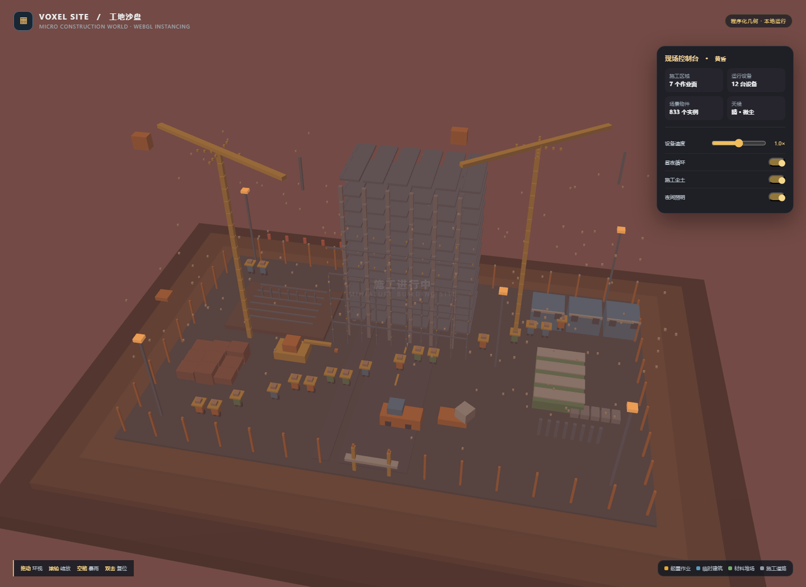

体素微缩建筑工地沙盘
单 HTML、无外部资源的 WebGL2 体素工地。包含施工区域、塔吊、楼房骨架、挖掘机、渣土车、板房、材料堆、工人、昼夜光照、尘土和暴雨效果；支持拖动环视、滚轮缩放、速度/循环/尘土开关及空格暴雨。
可直接双击打开 index.html；浏览器需要支持 WebGL2。提示词同时要求使用 Three.js r160 CDN 和完全不引用外部资源，本实现按单文件离线要求选择原生 WebGL2 实例化渲染，因此没有加载 Three.js。提示词末尾要求“添加新场景”，但没有给出具体场景或已有场景资料，本轮没有猜测其内容。
预览截图

<!-- archive:start -->
当前归档信息（自动生成）
- 实验 ID：
voxel-construction-site--gpt-6-luna-max-r02 - 模型：GPT-6 Luna；推理档位：max
- 类型：single-html；预览：static；网络：offline
- 完整原始输入快照 · 主题与其他版本
- 输入记录：提示词 v1 原文完整快照；正文包含 Three.js CDN 与不得加载外部资源的冲突要求，并在末尾提及未具体说明的新增场景。
- 工具：Codex 当前会话。按用户指定记录为 gpt-6-luna / max；本轮未委派子代理。
- 运行方式：浏览器直接打开本目录入口；CDN/外部素材需要联网。
- 费用记录：OpenAI · ChatGPT Plus 订阅；单案例货币金额未记录。据用户说明，OpenAI 模型通过 ChatGPT Plus 订阅测试；全部案例完成后，五小时额度未耗尽。未提供单案例费用金额。
- 体素工地沙盘
部署适配记录
- 从独立模型测试分支导入本轮实现，作为新的实验记录，保留本轮原始输入和产物。
- “添加新场景”没有附带目标场景或历史场景上下文，因此没有虚构具体新增场景。
- 归档来源：model-test-base 分支 demos/voxel-construction-site/runs/gpt-6-luna-max-r01；此前归档已有旧 r01，因此本轮保存为 gpt-6-luna-max-r02。 <!-- archive:end -->